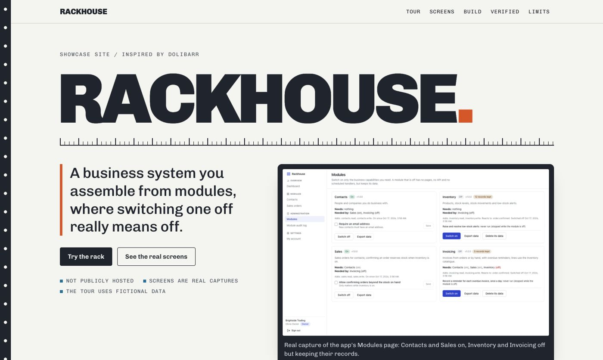

CRM · Module system · 2026-10
Rackhouse: modules that really switch off
A business system you assemble from modules, where switching one off really means off.

The CRM itself is private and not hosted: the public repo and the showcase site contain only the showcase source. Every screenshot is a real capture of the running app with synthetic data; the in-page tour is a labeled illustration of the app's own rules, not a live backend. Original implementation inspired by Dolibarr; no affiliation.
01 — The problem
A small company wants only the business capabilities it uses, and wants switching one off to be safe: no navigation, no pages, no API and no background work, while the data is kept and comes back unchanged.
Defining workflow: Switch on Contacts and Sales, try Invoicing and read why it cannot start yet, enable its prerequisites, create an invoice, switch Invoicing off through a reviewed cascade, see the page and API denied, switch it on again and find the invoice unchanged.
02 — What I built
One of eleven independent CRM MVPs in a single monorepo, each with its own database, migrations, tests and review packet. This one is inspired by Dolibarr and is called Rackhouse.
- A typed built-in module registry (Contacts, Inventory, Sales, Invoicing) with versions, dependencies, navigation, permissions, API prefixes, settings and handlers; no loader for uploaded code
- Per-workspace switches that only the owner can flip; dependencies enforced in the service and by database triggers, with a plain explanation when a prerequisite is missing
- A reviewed cascade for switching off: what else goes off, what data is kept and which handlers stop, applied in dependency order in one transaction and audited
- A route guard that answers 403 module_disabled for every endpoint of an off module, write-guard triggers on its tables, and navigation and pages that follow the switches
- Event handlers and a separate worker whose scheduled handlers run only for workspaces with the module on; export and a typed-phrase data deletion kept separate from switching off
03 — How it was built
- 01
Specify before building
An acceptance document names the persona, the bounded scope, what is deferred, and ties every required feature to evidence (a test, an end-to-end journey or a recorded check).
- 02
Model the database so the rules hold even if the code is wrong
A Prisma schema plus a hand-written migration of CHECK constraints, composite foreign keys that pin every record to its workspace, and triggers. The tests try to break these from raw SQL.
- 03
Build the distinguishing workflow through every layer
A typed built-in module registry (Contacts, Inventory, Sales, Invoicing) with versions, dependencies, navigation, permissions, API prefixes, settings and handlers; no loader for uploaded code
- 04
Prove it in a fresh clone
20 gate checks pass and 0 fail in a fresh clone of commit 9577fdc7a3: 2 unit, 34 integration against a real PostgreSQL, 15 browser tests on the production build, container start, a live black-box check, restart persistence, backup and restore, and a production-dependency audit.
- 05
Review it as an independent reader would
A review packet lists what is implemented, what is measured, what was fixed on the way, and every known limit and release blocker, so nothing here is claimed beyond its evidence.
04 — Results
20 gate checks pass and 0 fail in a fresh clone of commit 9577fdc7a3: 2 unit, 34 integration against a real PostgreSQL, 15 browser tests on the production build, container start, a live black-box check, restart persistence, backup and restore, and a production-dependency audit.
Screenshots on the showcase site are real captures at 1440, 768 and 390 pixels wide, taken from the production build with synthetic data.
05 — What I'd do next
- Four built-in modules only: no per-role module permissions, taxes, currencies, warehouses or purchasing
- Scheduled handlers run every 20 seconds per workspace with the module on; this is not a general job system
- Deleting a module's data is permanent: export it first
- UI labels are English only; not production-ready: no TLS, proxy or monitoring provisioned